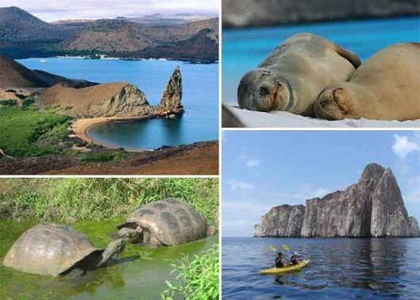

Gastronomía Típica
Descubre los secretos de platos tradicionales como el tigrillo, el hornado y el locro de papas.
Explora la riqueza natural, los paisajes inolvidables de las cuatro regiones y el sabor único de nuestra gastronomía tradicional.
Descubre los secretos de platos tradicionales como el tigrillo, el hornado y el locro de papas.
Viaja por la Costa, la imponente Sierra, la Amazonía y las mágicas Islas Galápagos.

Conoce las costumbres, historia y festivales que identifican nuestra hermosa identidad.